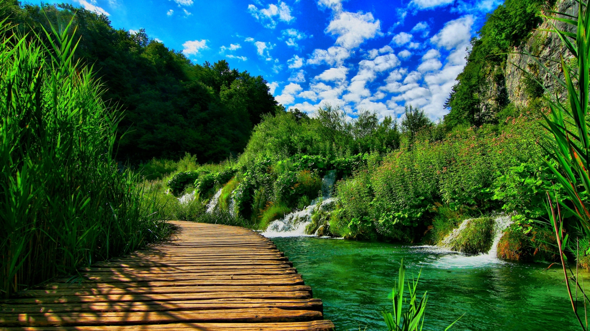

Türkmenistanyň Prezidentiniň 2022-nji ýylyň 8-nji iýulyndaky çykaran 178 belgili karary bilen tassyklanan «Türkmenistanyň Prezidentiniň obalaryň, şäherçeleriň, etraplardaky şäherleriň we etrap merkezleriniň ilatynyň ýaşaýyş-durmuş şertlerini özgertmek boýunça 2028-nji ýyla çenli döwür üçin Milli Maksatnamasynyň» Mary welaýatynda 2023-nji ýylda ýerine ýetirilşi barada jemleýji
MAGLUMAT
«Türkmenistanyň Prezidentiniň obalaryň, şäherçeleriň, etraplardaky şäherleriň we etrap merkezleriniň ilatynyň ýaşaýyş-durmuş şertlerini özgertmek boýunça 2028-nji ýyla çenli döwür üçin Milli Maksatnamasyna» laýyklykda Mary welaýaty boýunça 2023-nji ýylda ýerine ýetirilen gurluşyklar barada jikme-jik
MAGLUMAT

prev
next